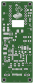
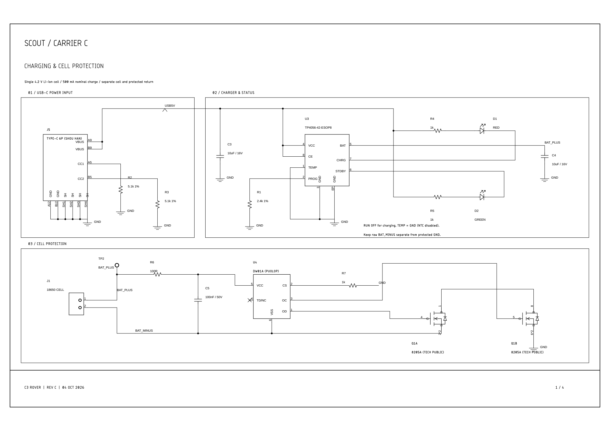
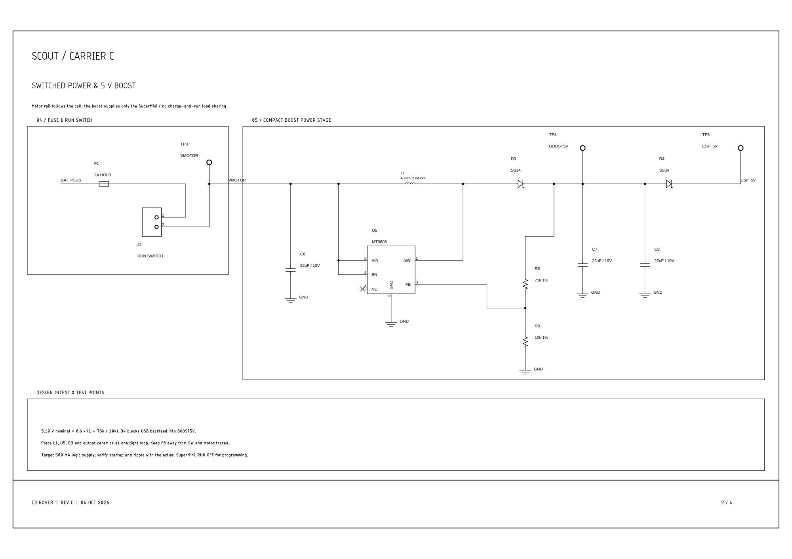
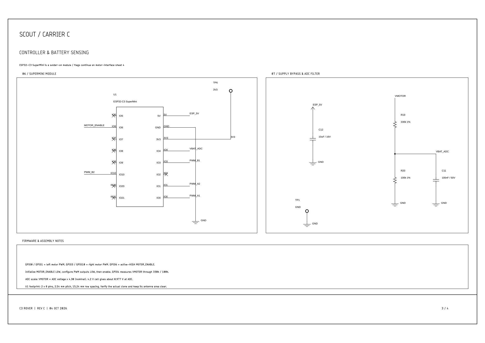
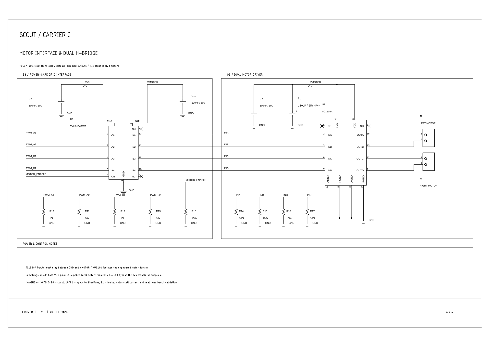
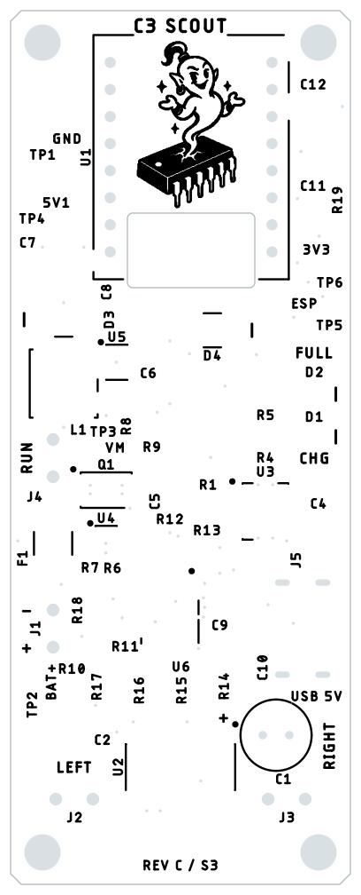
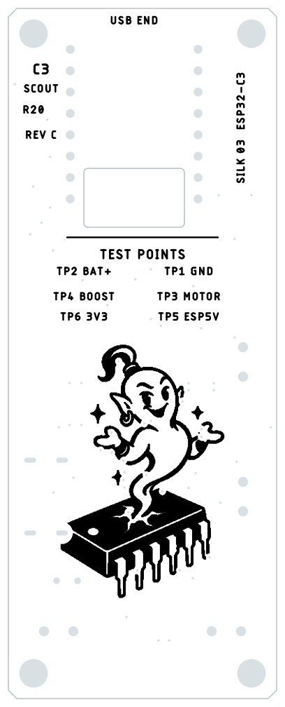

Scout's Carrier C brings the charger, cell protection, logic supply and two motor channels onto one board. Use this page to follow the circuit, identify the connections and download the matching files for fabrication or editing.
Carrier C / Silk 03 Board v10 Schematic v6 5 October 2026
Get oriented
The two faces of the board
The carrier is 32 × 82 mm, with two copper layers, four M3 mounting holes and an opening beneath the SuperMini antenna. The images below come from the current v10 manufacturing files. They show the bare board layers; they are not photographs of an assembled board.


Select any drawing to open it at full size. The two-page trace layout PDF is useful when following copper connections.
Follow the circuit
Four sheets, nine circuit blocks
Start with charging and cell protection, then follow the switched supply to the controller and motor interface. These images are fresh renders of the current schematic PDF. The RevC drawing names identify Carrier C; the current saved Fusion versions are schematic v6 and board v10.
Sheet 1 of 4
Charging and cell protection
USB-C feeds the charger. The cell protection circuit sits in the battery return path, so the raw cell negative and the board's protected ground are separate connections.

01 / USB-C power input
J5 accepts charging power. Separate 5.1 kΩ resistors on CC1 and CC2 identify the input to a USB-C source. This connector is for charging; program the ESP through the SuperMini's own USB port.
02 / Charger and status
U3 is the TP4056 charger. R1 sets a nominal 500 mA charge current. D1 is the red charging indicator and D2 is the green full-charge indicator. The TEMP pin is grounded, so cell-temperature sensing is disabled.
03 / Cell protection
U4 and Q1 control the battery return connection. The v10 parts are PUOLOP DW01A and TECH PUBLIC 8205A. Connect the cell only to the marked battery pads; do not join BAT_MINUS directly to GND.
Sheet 2 of 4
Switched power and 5 V boost
The RUN switch controls the motor supply and the boost converter input. The motor rail follows the battery voltage; the separate boost stage supplies the controller.

04 / Fuse and RUN switch
F1 is the resettable fuse. J4 connects the external RUN switch between the fused battery supply and VMOTOR. Opening RUN removes the motor supply independently of the software Stop control.
05 / Compact boost power stage
U5, L1 and D3 form the MT3608 boost stage. The feedback resistors set a nominal 5.10 V before D4; that diode feeds the ESP_5V rail. The supply still needs startup, ripple and temperature checks with the actual SuperMini.
Sheet 3 of 4
Controller and battery sensing
The ESP32-C3 SuperMini provides the control signals. A filtered divider lets it sense the switched battery rail, while test points make the main supply rails accessible.

06 / SuperMini module
U1 is installed by hand. GPIO0/1 control the left motor, GPIO3/10 control the right motor and GPIO6 enables the motor interface. Verify the actual module's pin order and dimensions before soldering it in place.
07 / Supply bypass and ADC filter
C12 bypasses the ESP supply. R19, R20 and C11 scale and filter VMOTOR for GPIO4. This measures the switched rail; it is not a wheel-speed sensor. GPIO4 is already used by this circuit.
For the OLED, spare pins and firmware connections, continue to Code and controls.
Sheet 4 of 4
Motor interface and dual H-bridge
A level translator passes the controller's signals to the motor-supply domain. The dual motor driver then switches the two motors in either direction.

08 / Power-safe GPIO interface
U6 is the TXU0104 level translator. Pull-down resistors establish disabled defaults, and its enable signal stays low until the firmware is ready to drive. Its two supply domains follow 3V3 and VMOTOR.
09 / Dual motor driver
U2 is the TC1508A dual H-bridge. J2 is the left motor output and J3 is the right motor output. C1 is the 100 µF bulk capacitor on the motor rail. Check the motors' actual stall current and the driver's temperature during hardware qualification.
Read the board
Silkscreen, connections and polarity
The printed legend identifies the wiring pads, component references and test points. These black-on-white references use the current manufacturing silkscreen. Gray outlines and holes are added only to help locate the artwork.


| Marking | Connection or check |
|---|---|
| J1 / battery | One 18650 cell. Follow the marked positive and negative pads. BAT_MINUS is the raw cell return, separate from protected GND. |
| J2 / left motor | Left motor wires. Verify direction with the wheels raised; use the controller's saved direction setting if needed. |
| J3 / right motor | Right motor wires. Check this motor independently during the first direction test. |
| J4 / RUN | External motor-power switch. Its two wires bridge the fused supply to VMOTOR. Check mounting and wire strain relief for your actual switch; a verified switch bracket is not supplied. |
| J5 / USB-C | Charging input. The current footprint is for SHOU HAN TYPE-C 6P and has four plated mounting slots. |
| C1 / + | Electrolytic capacitor polarity. In the top view with the antenna end up, C1's positive lead is on the left; confirm the + mark before fitting it. |
| IC dots and diode bars | Dots identify IC pin 1. Diode bars identify the cathode. Compare the part, pad numbering and assembly preview before soldering. |
| TP1 to TP6 | TP1 GND · TP2 BAT_PLUS · TP3 VMOTOR · TP4 BOOST5V · TP5 ESP_5V · TP6 3V3. |
Some references are on the assembly drawing rather than the printed legend. Use the schematic, board layout and placement file together when identifying a crowded area.
Assembly and first power
Keep RUN open while charging or programming
- Inspect the unpowered board. Check battery and capacitor polarity, IC orientation, the USB-C fit and solder joints. Confirm the actual SuperMini pinout before installing U1.
- Check the assembly files. The factory population is 45 parts: 44 surface-mount parts and through-hole C1. U1 is installed by hand. Review the factory's placement preview, particularly J5, C1 and the IC orientations.
- Program with RUN open. Connect the SuperMini's own USB port and load the matching firmware from Code and controls.
- Prepare the first movement check. Unplug the SuperMini USB cable, raise the wheels clear and then close RUN. Connect the controller and start at its default low drive limit.
- Check each motor's direction. Stop before changing direction settings. Releasing the joystick or using Stop ends the motor command; opening RUN cuts the motor supply independently.
Continue to Print and build for the chassis, fasteners and physical assembly.
Keep the revision together
Board downloads
Use the v10 Gerbers, BOM and placement file together. The current USB-C footprint and component selections differ from earlier releases. The editable Fusion files retain RevC names and match this v10 board / v6 schematic release.
Fabrication and assembly
- Gerbers ZIP — PCB fabrication layers and drill files
- Assembly BOM CSV — 24 groups / 45 placements
- Placement file CSV — positions and rotations
- Detailed sourcing workbook
- Factory upload guide
The Gerber ZIP contains seven fabrication Gerbers plus separate plated and nonplated drill files. Paste/stencil files are not included. Select top-side assembly with through-hole soldering for C1, and review the manufacturer's placement preview.
Fusion source and drawings
Download Fusion source package
- Editable schematic SCH
- Editable board BRD
- Component library LBR
- Four-page schematic PDF
- Two-page board layout PDF
Keep the schematic, board and component library together when editing. The Rev B mechanical model is a separate release; its component placement is not synchronized to Carrier C's electrical layout.